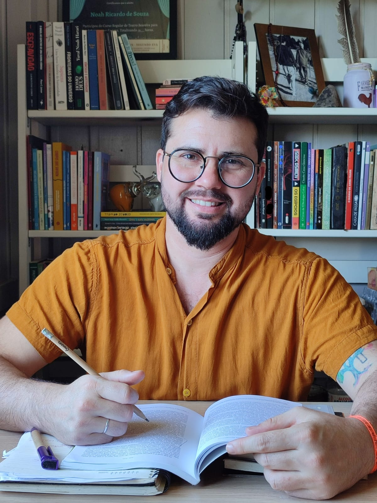
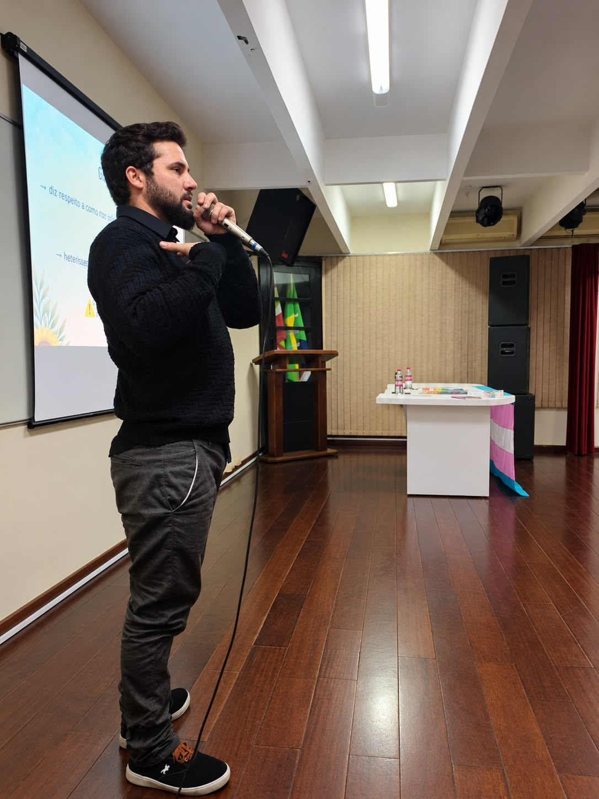
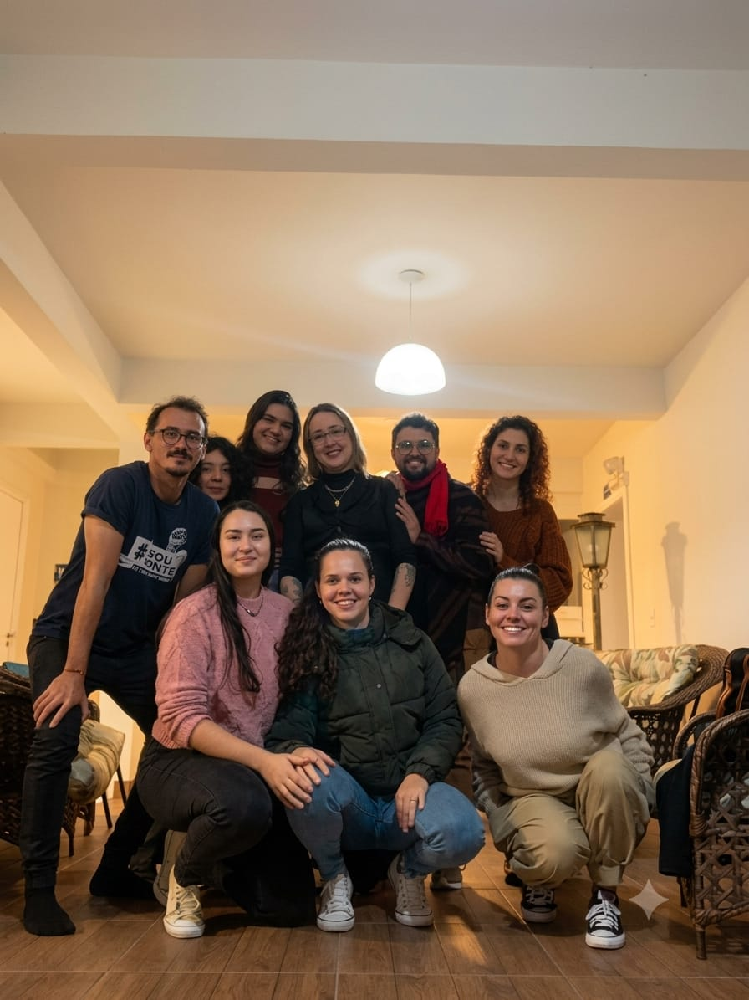
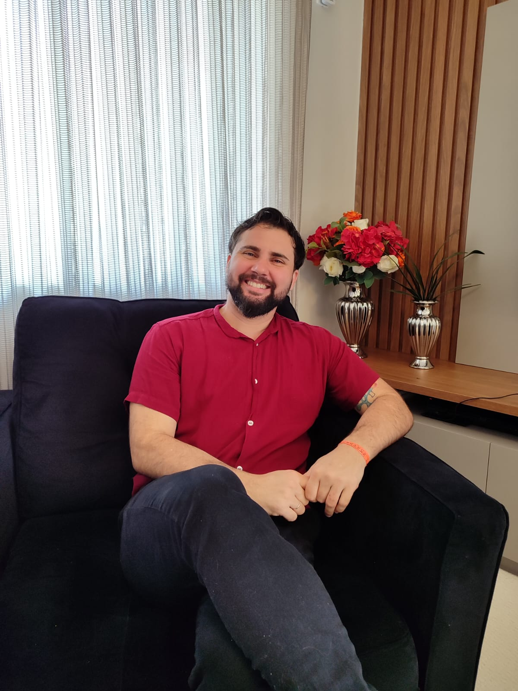

Autoconhecimento
Explore sua história, reconheça os conflitos que atravessam sua experiência e abra espaço para novas compreensões sobre si mesmo.
Um espaço de escuta para compreender sua história, conflitos, desejos e as formas singulares de viver a própria experiência.

Explore sua história, reconheça os conflitos que atravessam sua experiência e abra espaço para novas compreensões sobre si mesmo.
Encontre um espaço de escuta para falar sobre suas angústias, inquietações e experiências, dando lugar à elaboração daquilo que causa sofrimento
Investigue os modos como você constrói seus vínculos, os impasses que se repetem nas relações e os sentidos que eles assumem em sua história.
Aproxime-se de suas questões, contradições e desejos, reconhecendo a singularidade de sua trajetória e as possibilidades que podem surgir a partir dela.

Sou psicólogo (CRP 12/31748), e minha trajetória com a psicanálise começou ainda durante a graduação, período em que desenvolvi meus estágios orientado por essa perspectiva de escuta, que segue fundamentando meu trabalho clínico. Desde então, venho aprofundando meus estudos sobre a psicanálise e suas contribuições para a compreensão do sofrimento psíquico e da singularidade de cada sujeito.
Minha trajetória também é atravessada pelo interesse nas relações entre subjetividade, cultura e sociedade, especialmente nas questões de gênero, sexualidade e diversidade. Por meio de projetos coletivos e trabalhos voluntários, busco contribuir para espaços de escuta, reflexão e valorização das experiências da população LGBTQIAPN+, considerando as dimensões sociais e históricas que atravessam suas vivências.
Atualmente, moro em Florianópolis e realizo atendimentos psicológicos individuais on-line para adolescentes e adultos. Meu trabalho busca oferecer um espaço de escuta ética e acolhedora, no qual cada pessoa possa falar sobre suas experiências, elaborar seus conflitos e construir novas possibilidades de compreensão de si, respeitando sua história e singularidade. Seja bem-vindo(a) ao meu espaço! Por aqui, compartilho reflexões sobre psicanálise, subjetividade, sexualidade e os atravessamentos da vida contemporânea.
Uma trajetória construída entre psicologia, psicanálise, arte e experiências coletivas, com atenção à singularidade dos sujeitos e às dimensões sociais que atravessam suas histórias
Graduação em Psicologia pela Faculdade Estácio de Sá de Florianópolis (2026).
Desenvolvimento de projetos que articulam psicologia, gênero, sexualidade, diversidade e perspectivas descoloniais, promovendo espaços de reflexão sobre as experiências humanas e suas dimensões sociais e culturais
Criação e participação em projetos coletivos com pessoas LGBTPIAQ+, utilizando a arte, a memória e o diálogo como caminhos para compartilhar experiências, resgatar histórias silenciadas e construir espaços de pertencimento, expressão e elaboração coletiva.
A psicanálise parte da compreensão de que o inconsciente participa da constituição do sujeito, atravessando seus desejos, suas escolhas, seus vínculos e suas formas de experimentar o sofrimento. Aquilo que insiste e se repete pode revelar questões importantes sobre a história de cada pessoa. Nessa perspectiva, o sintoma não é compreendido apenas como algo a ser eliminado, mas como uma expressão singular que merece ser escutada e investigada.
O trabalho analítico oferece um espaço para que a palavra circule, permitindo ao sujeito entrar em contato com seus conflitos, interrogar suas repetições e elaborar os sentidos que atravessam sua experiência
Um primeiro encontro para falar livremente sobre o que trouxe você à psicoterapia e conhecer os aspectos práticos do processo.
Um tempo de escuta, apresentação da história, relações e conflitos e construção do vínculo terapêutico.
O processo respeita o tempo, o ritmo e a linguagem de cada pessoa, favorecendo elaboração e novos sentidos.
Construir novos sentidos para a própria experiência.
A clínica orientada pela psicanálise oferece um espaço de escuta no qual a palavra pode ganhar lugar. A partir da história de cada sujeito, seus desejos, conflitos, angústias e contradições podem ser explorados em sua singularidade.
Em vez de respostas prontas, a proposta é escutar aquilo que insiste, se repete ou ainda não encontrou palavras, abrindo espaço para a elaboração e para novas formas de compreender a própria experiência.
Na prática, também são utilizados exercícios e recursos provenientes do teatro, valorizando expressão, experiência subjetiva e criação.

Um momento para falar sobre o que motivou a busca por atendimento, compartilhar suas questões e conhecer a proposta de trabalho clínico.
Um tempo dedicado à escuta da história, dos vínculos e das questões que atravessam a vida do sujeito, permitindo compreender sua demanda e construir as bases do trabalho analítico.
Um processo construído a partir da fala e da escuta, respeitando a singularidade de cada sujeito. Ao longo dos encontros, as experiências de sofrimento podem ser investigadas e elaboradas, possibilitando a construção de novos sentidos para a própria história.
Uma prática fundamentada em perspectivas descoloniais, que busca ampliar os modos de escuta e compreensão da experiência humana, respeitando a singularidade de cada sujeito e sua história.
A psicanálise compreende que o sujeito é atravessado pelo inconsciente, que participa de escolhas, relações, desejos e formas de lidar com o sofrimento.
Aquilo que se repete pode se tornar uma importante via de escuta. O sintoma possui uma história e uma função na experiência de cada pessoa.
O trabalho analítico convida o sujeito a falar sobre angústias, desejos, conflitos e repetições, permitindo processos de elaboração a partir de sua própria linguagem e história.
"A Psicologia Social compreende o sujeito em sua relação com a sociedade, considerando como os contextos históricos, culturais e políticos atravessam a construção das identidades, dos vínculos e das experiências de sofrimento."
A proposta articula contribuições da Psicologia Social, do psicodrama, das práticas artísticas e das perspectivas descoloniais, reconhecendo como as desigualdades de classe, raça, gênero e sexualidade atravessam as experiências individuais.
O trabalho dialoga com autores como Bader Sawaia, Silvia Lane, Lélia Gonzalez e Beatriz Nascimento, cujas reflexões abordam subjetividade, sofrimento ético-político, exclusão social, memória e resistência, além de Jacob Levy Moreno, referência nos estudos sobre processos grupais, espontaneidade e criatividade.
Na prática, são utilizados recursos como rodas de conversa, exercícios de expressão corporal, atividades artísticas e propostas cênicas, favorecendo o compartilhamento de experiências e a reflexão coletiva.

Para iniciar a psicoterapia ou saber mais sobre as dinâmicas coletivas, entre em contato.
Algumas informações para facilitar seu primeiro contato.
A psicoterapia individual é indicada para pessoas que desejam compreender melhor suas emoções, enfrentar desafios, desenvolver o autoconhecimento e cuidar da saúde mental. É um espaço seguro de acolhimento e escuta, respeitando a história, as necessidades e o ritmo de cada pessoa.
A primeira sessão é um momento de acolhimento e escuta, no qual você poderá compartilhar suas questões, sentimentos e expectativas em relação à terapia. Também será uma oportunidade para conhecer a forma de trabalho da psicóloga, esclarecer dúvidas e compreender os aspectos práticos do acompanhamento, construindo as bases para um processo terapêutico individualizado, respeitoso e seguro.
Cada sessão geralmente dura entre 45 e 50 minutos, podendo variar conforme a abordagem e a organização do atendimento.
As sessões acontecem por videochamada, em um ambiente virtual que permite conversar com privacidade e conforto, sem precisar sair de casa. É importante ter uma conexão estável e um local reservado.